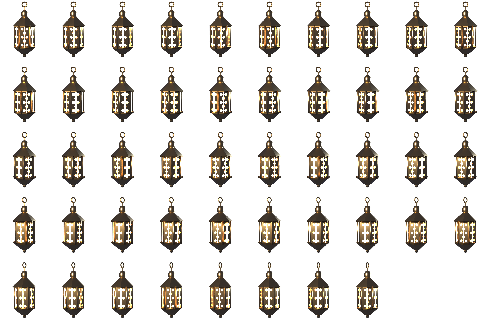
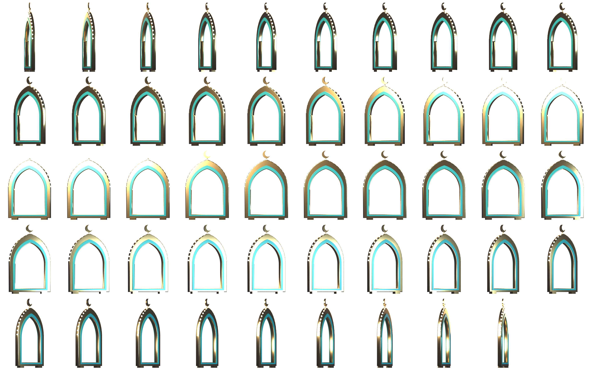
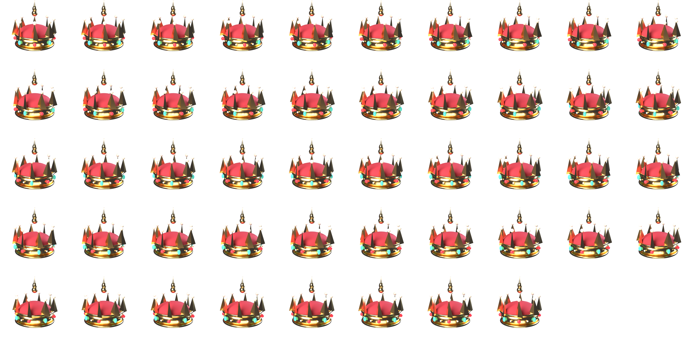
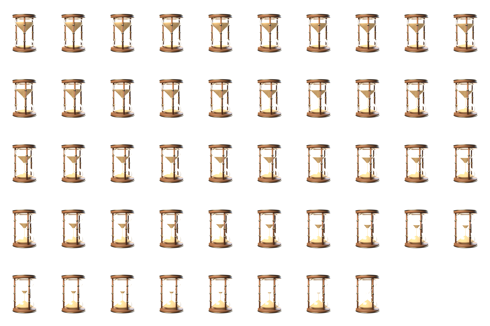

الخوف المرآة شبت شماتة الملك الجاه منا حسابكم العبد مولاه قتلتنا تياه يدنا قتلاه الرث المهيب سوطين عصاه أرضاه مفاجأة بأناة عدم جناة يطاردني ألقاه يواجهه فر آثاره صداه حق كذب النقائض دم يمناه متعباً قدماه كتفي السعيد صاحبنا صاحبناه كرم خفناه القلب شجاعة أم تخشاه إجبارية نقمة نعمة صبيتنا قيصر شاه حقيقته شره جدواه تغيرنا عيناه مراياك صباه أحداً فلاة معاً لله
تميم البرغوثي AL-KHAWF FEAR Tamim Al-Barghouti 0123456789
الخوف تميم البرغوثي